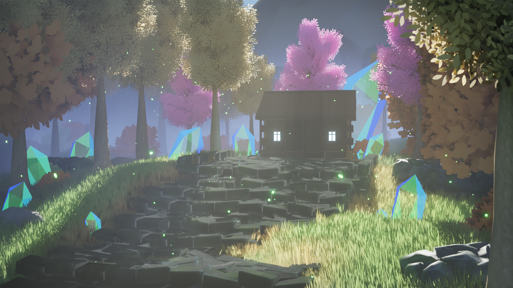
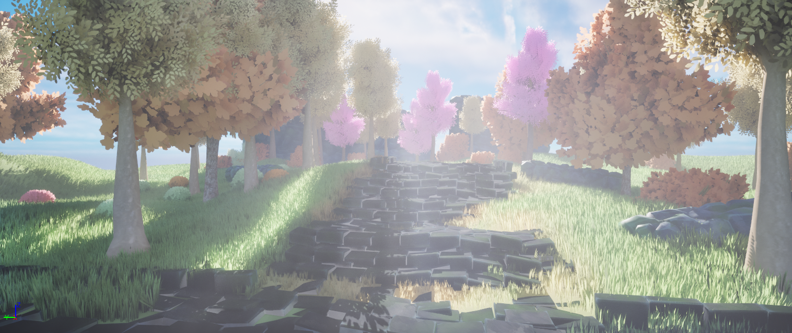
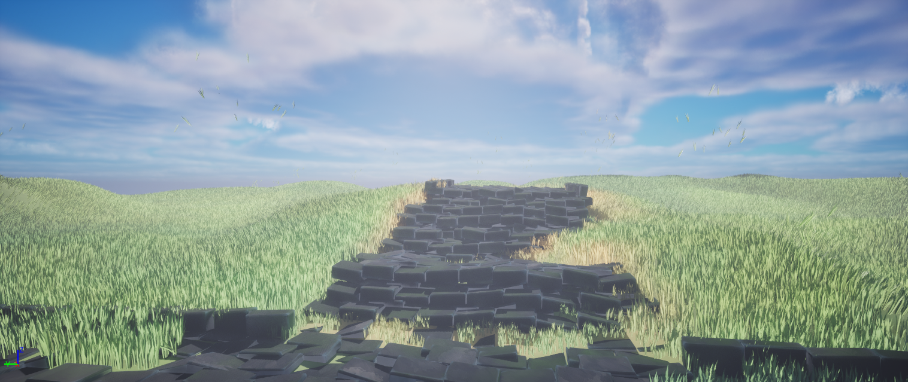
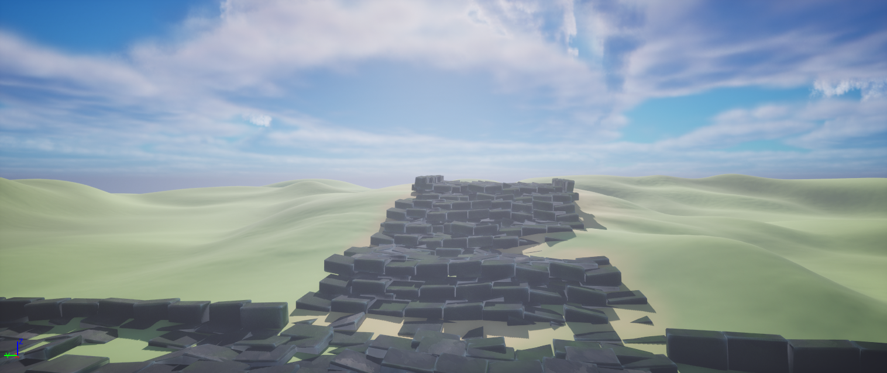

Projet d'expérimentation dans le cadre du mémoire de Master 2. Sujet : l'environnement stylisé pour contribuer à la narration implicite dans les jeux vidéo. Problématique : comment l'habillage de décor dans les environnements stylisés contribue-t-il à la narration implicite dans les jeux vidéo ?
Dans le cadre de cette expérimentation, j'ai voulu créer un environnement sur la base d'une histoire que j'ai commencé à écrire. La sorcière est une figure majeure du scénario : elle s'est volontairement isolée aux abords d'une forêt. Les villageois racontent qu'elle maîtrise la magie de cristal.
La rumeur locale déconseille fortement à quiconque de s'aventurer près de sa maison, mais tout cela est un stratagème mis au point par la sorcière et les villageois pour dissuader les brigands et curieux malintentionnés de s'approcher du village.
Le but de cette expérimentation était de représenter un espace narratif extérieur pour traduire cette histoire sans la raconter explicitement, et c'était l'occasion de donner « vie » à un projet personnel.
Images




